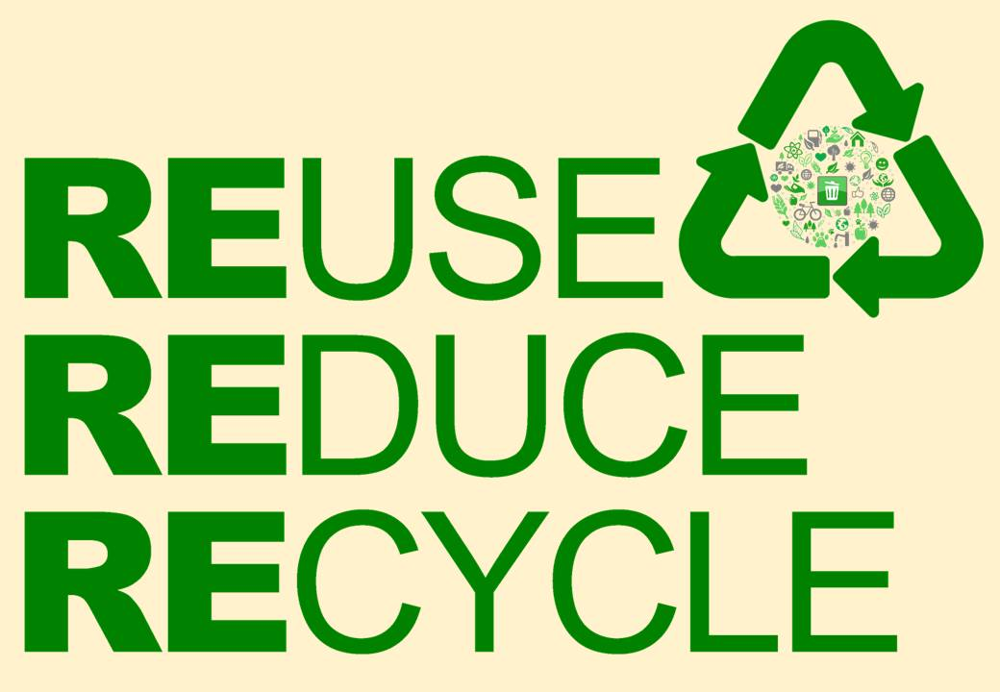

Use less single use plastics
- Bring reusable bags when you go shopping
- Drink from a refillable water bottle
- Use a metal or paper straw
Properly recycle the plasitic you do use
- Make sure to rinse your plastcis clean of food residue
- Follow all local guidlines for trash and recycling proceedures
- For more information from the City of Dearborn, check out this site!

Image Source: https://commons.wikimedia.org/wiki/File:Reduce_Reuse_Recycle.jpg